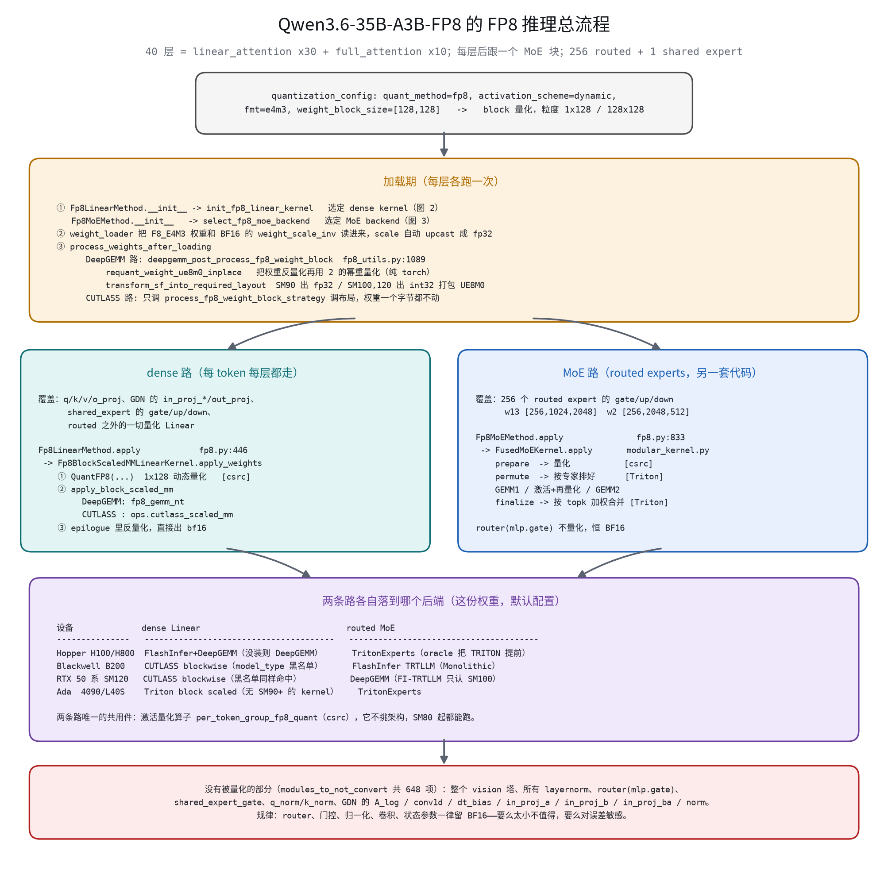
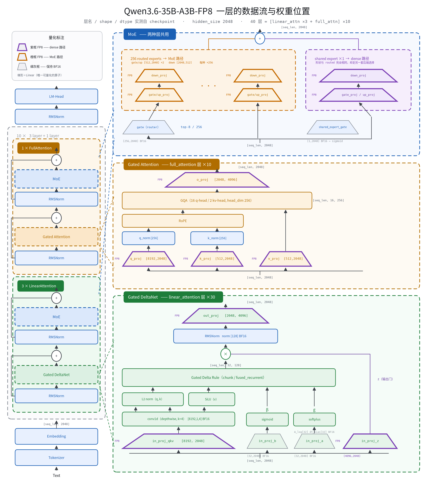
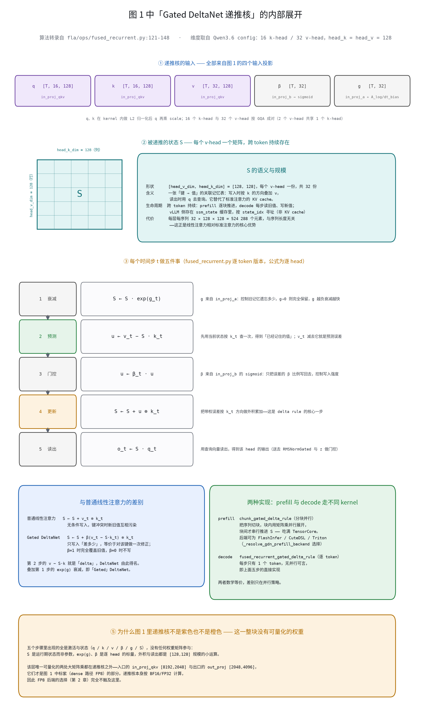
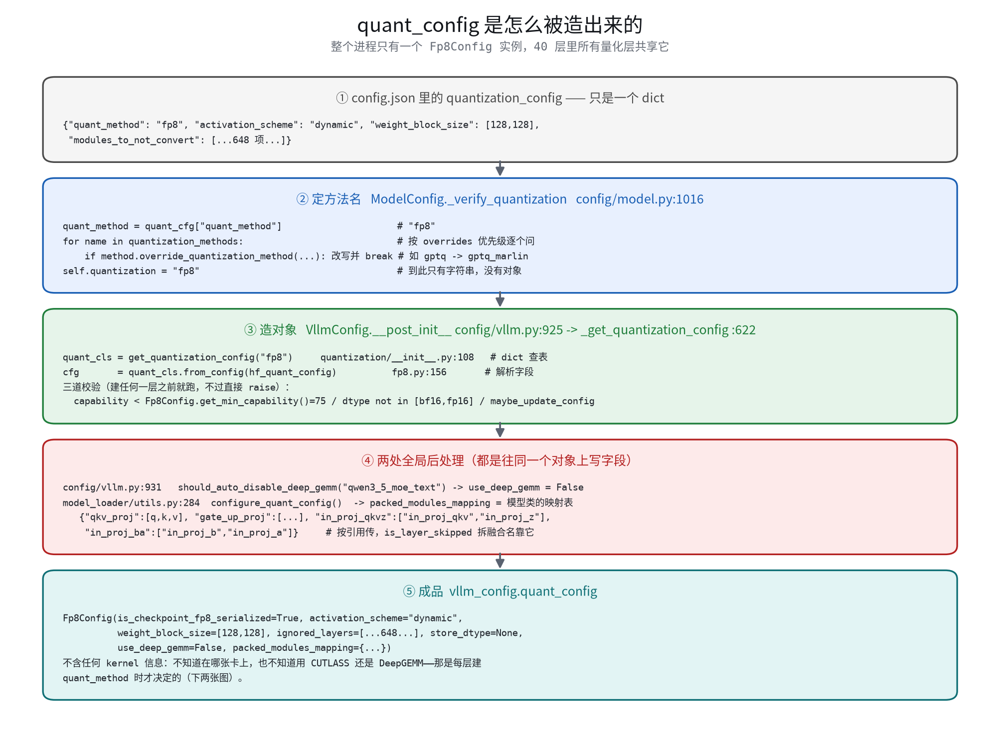
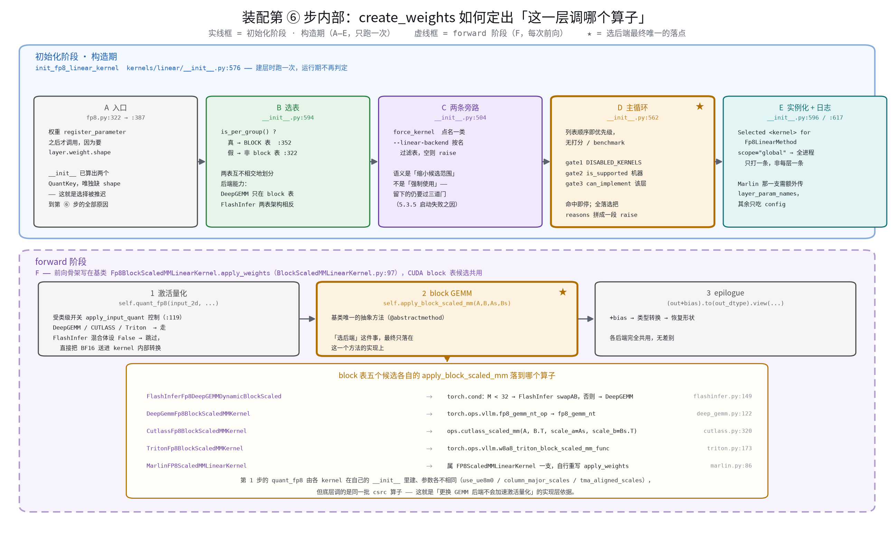
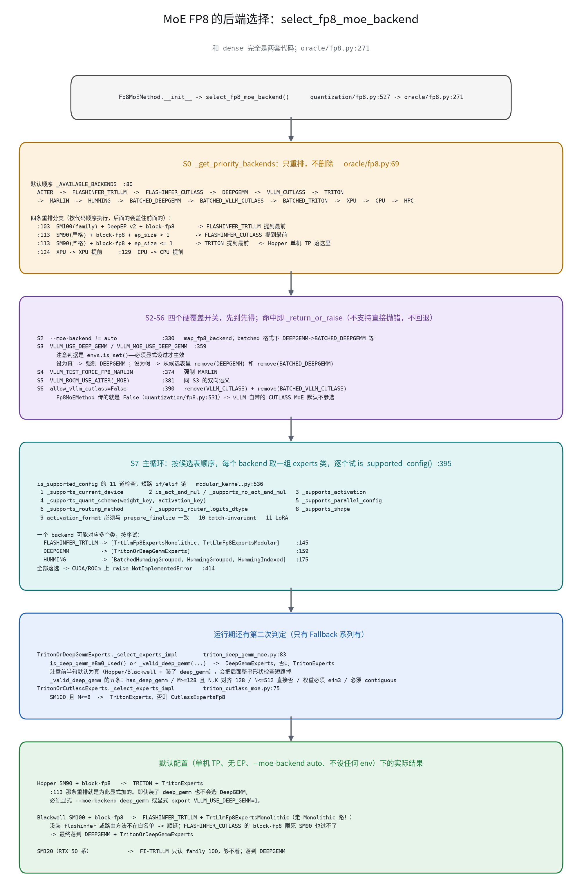
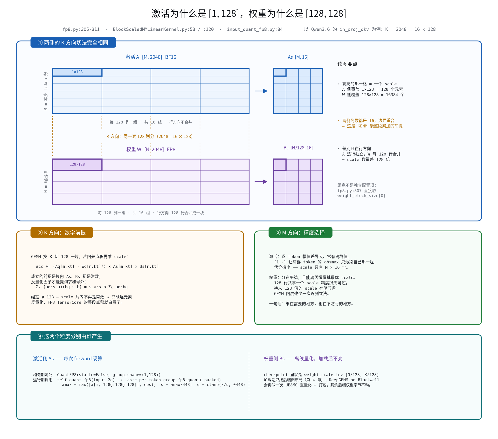
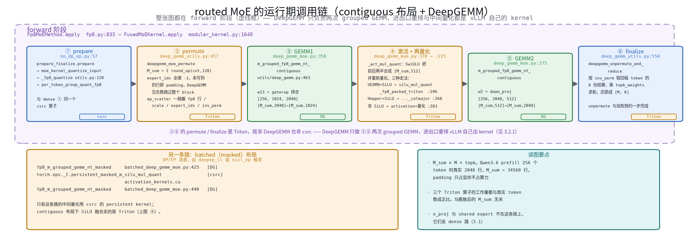
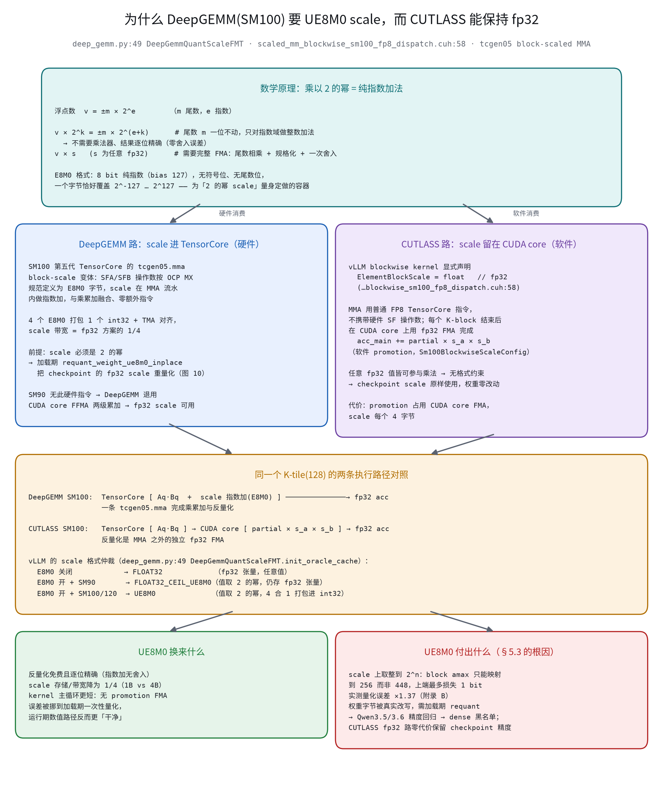

00–055 min
1 · 开场与地图
对应报告 1.1–1.2 · 图 15（总流程）
- 抛出上面三个问题，明确今天不讲 FP8 数值格式本身（有姊妹篇）。
- 先给全景图 图 15，让听众知道后面每一段在整张图的哪个位置。
- 宣布结构：初始化 → 运行时 → 原理 → 案例，前三段都是为第四段服务。
{kind=link}
今天要回答的是「谁在什么时候做了选择」，不是「哪个 kernel 更快」。
一条主线贯穿全场：配置对象只描述 checkpoint，硬件决策全在 quant_method 的构造函数里； 而 dense 与 MoE 的这两个构造函数互不共享一行代码。 听众带走的应该是一张能自己推演的决策图，而不是一条「SM100 上用 CUTLASS」的结论。
o_proj 和 shared expert，算 dense 还是 MoE？
全场最常见的误归类。第 2 段用一张图讲完。
o_proj 与 shared expert 是紫的。in_proj_a/b 保持 BF16 而 in_proj_z 被量化——32×2048 的门控标量 vs 4096×2048 的大矩阵乘。config.json → Fp8Config 的五步 图 3；表 5 顺带给出全部 30 个 quant_method 字符串到 21 个配置类的映射。get_quant_method(layer, prefix) 的两个入参。quant_config=None（router）、ignored_layers 命中（648 项）、投机解码 draft 模型另建一份。get_quant_method 里，而在后面的 create_weights / __init__——图 5 把这一步拆成 A–F 六段，结论是「选后端」最终只落在 apply_block_scaled_mm 一个抽象方法上。--linear-backend 过滤后为空直接报错不回退；VLLM_USE_DEEP_GEMM 判据是 is_set()，「默认开」与「显式设 1」是两种行为。process_weights_after_loading：后端差异第一次落到权重字节上。[1,128] 与 [128,128] 的粒度耦合：片内 scale 为常数，反量化因子才能提出求和号。M_sum：Qwen3.6 prefill 256 token 时真实 2048 行、M_sum 却是 34560 行，≈17 倍膨胀只占显存不占算力（padding 行 expert_ids = −1 被跳过）。TritonOrDeepGemmExperts 每次 forward 二选一。tcgen05 block-scaled MMA；CUTLASS 走软件通路——ElementBlockScale = float，在 CUDA core 上做 promotion 图 12。52069012f（#38083）同时新增了 gsm8k 评测配置。--linear-backend deep_gemm 的后果是启动失败而非回退。
图 15 · 第 1 段推理总流程
图 1 · 第 2 段一层数据流与权重位置
图 2 · 第 2 段GDN 递推核展开
图 3 · 第 3 段quant_config 五步构造
图 5 · 第 3 段kernel 选择流程 图 7 · 第 4 段dense 后端选择
图 7 · 第 4 段dense 后端选择

图 8 · 第 4 段MoE 后端选择
图 10 · 第 5 段量化粒度耦合
图 11 · 第 5 段MoE 运行期六步
图 12 · 第 6 段两条反量化通路 图 16 · 第 7 段候选逐个落选
图 16 · 第 7 段候选逐个落选
m = llm.llm_engine.model_executor \
.driver_worker.model_runner.model
# 0 号层是 linear_attention
lin = m.model.layers[0].linear_attn.in_proj_qkvz
print(type(lin.quant_method).__name__,
type(lin.quant_method.fp8_linear).__name__)
qm = m.model.layers[3].mlp.experts \
.routed_experts.quant_method
print(type(qm).__name__,
getattr(qm, "fp8_backend", None)
or qm.old_quant_method.fp8_backend)Selected %s for %s —— dense 实际选中的 kernel 类名Using ... Fp8 MoE backend out of potential backends —— MoE 的选中项与当次候选表Auto-disabled DeepGemm for model_type=... —— 命中 Blackwell 黑名单DeepGemm disabled for N <= 512（debug 级）—— MoE 运行期回退 Triton四条日志与 表 29 一一对应，建议现场投一次真实启动日志。
VLLM_USE_DEEP_GEMM_E8M0=0 不就没精度问题了？quant_config.use_deep_gemm 改回 True 呢？can_implement 里的独立调用；改配置只会让反量化守卫失效 表 25。validate_fp8_block_shape 要求 128 对齐，比 DeepGEMM 的 64/128 更严，不满足会直接 raise。_valid_deep_gemm 有 N <= 512 一条，对这份权重恰好命中；默认 E8M0 开启会把它短路，关掉则每次 forward 回退 Triton。M_sum 膨胀那一个数字，其余口头带过。ep_scatter 里顺带做了 UE8M0 位打包）、4.3.2/4.3.3 的接口清单、附录 B 的逐元素数值演示。{kind=link}
{kind=link}
{kind=link}
{kind=link}
{kind=link}
{kind=link}
{kind=link}
{kind=link}